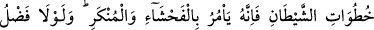
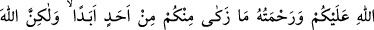
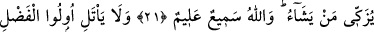
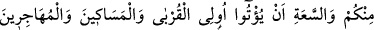
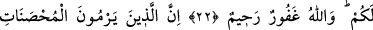
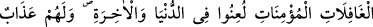
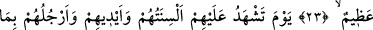
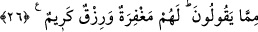

ALLAH’IN BAĞIŞLAMASINI
ARZULAMAZ MISINIZ?
21. Ey îman edenler! Şeytanın adımlarını takip etmeyin. Kim şeytanın adımlarını
takip ederse, muhakkak ki o, edepsizliği (yüz kızartıcı suçları) ve kötülüğü
emreder. Eğer üstünüzde Allah’ın lütuf ve merhameti olmasaydı, içinizden hiçbir
kimse asla temize çıkamazdı. Fakat Allah dilediğini arındırır. Allah işitir ve bilir.
22. İçinizden fazîletli ve servet sâhibi kimseler akrabaya, yoksullara, Allah
yolunda göç edenlere (mallarından) vermeyeceklerine yemin etmesinler;
bağışlasınlar; feragat göstersinler. Allah’ın sizi bağışlamasını arzulamaz mısınız?
Allah çok bağışlayandır, çok merhametlidir.
23. Namuslu, kötülüklerden habersiz mümin kadınlara zinâ isnâdında bulunanlar,
dünya ve âhirette lânetlenmişlerdir. Ve onlar için çok büyük bir azâb vardır.
24. Ki o gün dilleri, elleri ve ayakları onların yaptıklarına şâhidlik edecektir.
25. O gün Allah onlara gerçek cezâlarını tastamam verecek ve onlar Allah’ın
apaçık gerçek olduğunu anlayacaklardır.
26. Kötü kadınlar kötü erkeklere, kötü erkekler ise kötü kadınlara; temiz